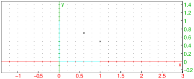

24.10.3 Circles (TI compatibility)
The Circle
command creates a circle.
-
Circle takes three mandatory arguments and one
optional argument:
-
x,y,r, three real numbers.
- Optionally, n, either 0 or 1 (by default, 1).
- Circle(x,y,r,n) returns the circle centered at
(x,y) with radius r. If n=1, it also draws the circle; if
n=0, it erases it.
Example
